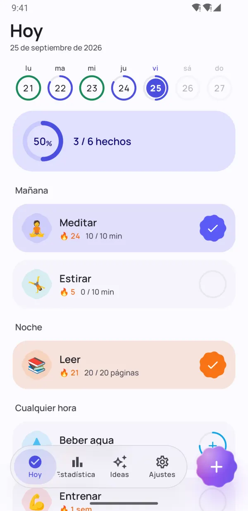
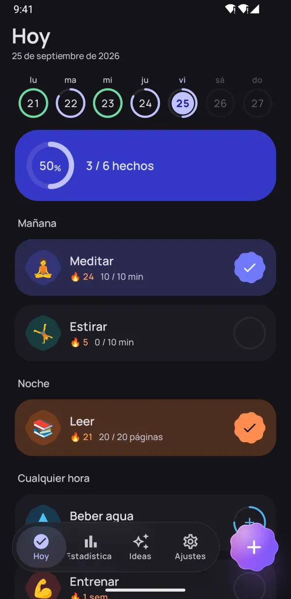
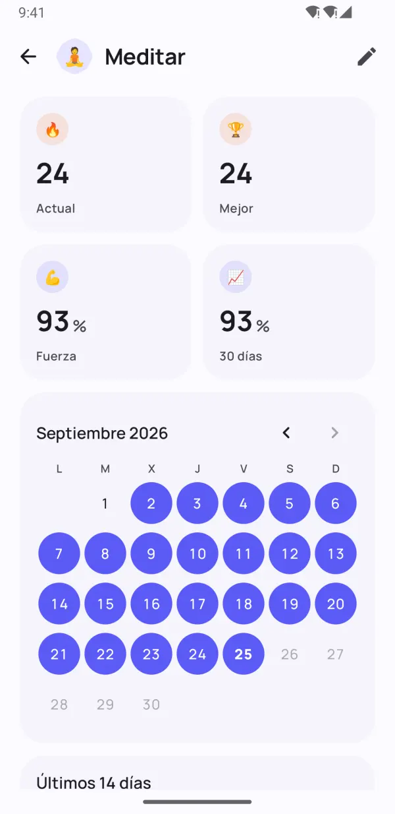
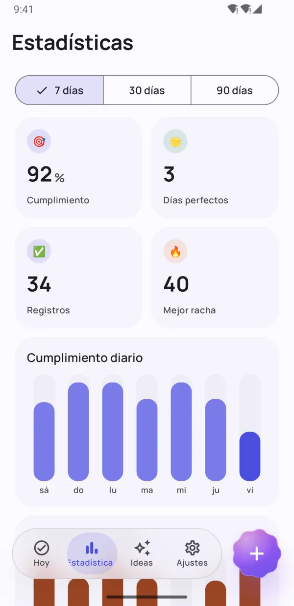
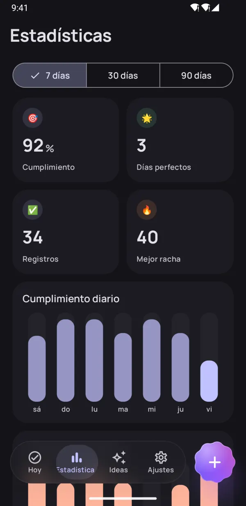
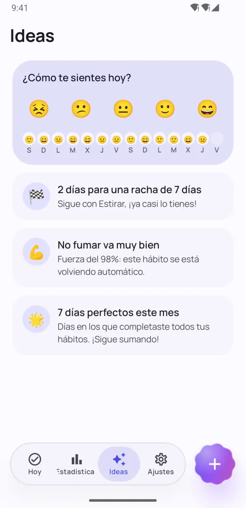
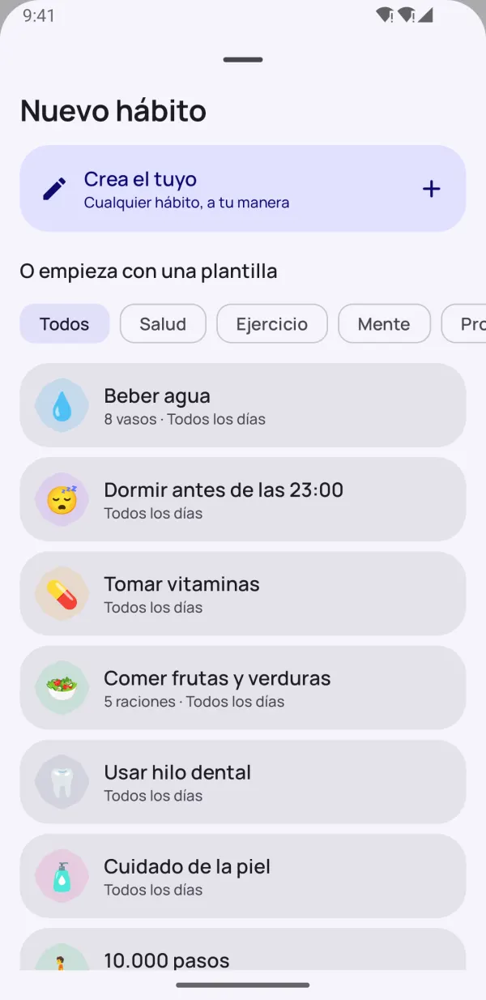
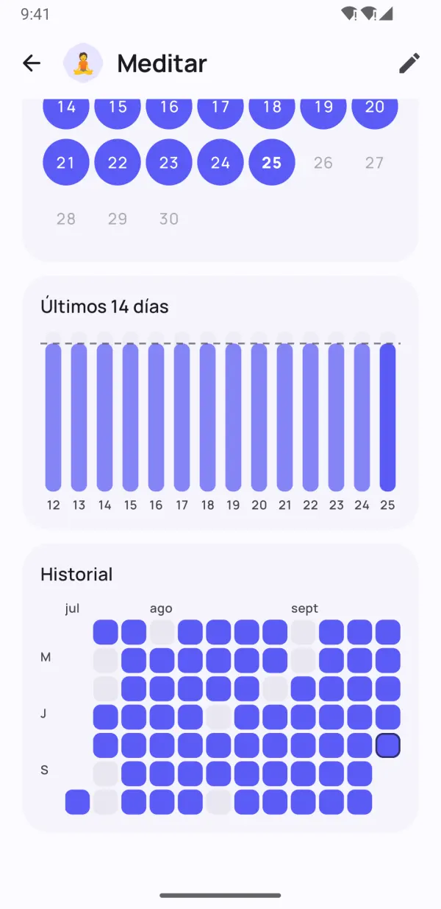

Pequeños hábitos.
Grandes cambios.
Dotday te ayuda a crear buenos hábitos y dejar los malos, sin presión. Márcalos con un solo toque, mantén viva tu racha en los días más ocupados y descubre qué te funciona de verdad.
- Gratis
- Sin registro
- Tus datos, en tu teléfono
- 13 idiomas


Hecho para que tus hábitos duren
Todo lo que necesitas para ser constante, y nada que te estorbe.
Todo tu día, a un toque
Los grupos de mañana, tarde y noche convierten tu rutina en una lista sencilla. Un toque y listo.
- Sí/no, cantidades, temporizadores y hábitos para dejar
- La franja semanal muestra cada día de un vistazo
- «Hecho» y «En 10 min» desde el propio recordatorio

Rachas que perdonan un mal día
Días de descanso, horarios flexibles y congeladores de racha te mantienen en marcha. La fuerza del hábito muestra lo consolidado que está de verdad, no solo cuánto dura tu racha.
- Salta un día sin romper tu racha
- Congeladores de racha para días ocupados o de enfermedad
- Fuerza del hábito de 0 a 100 %


Mira tu progreso real
Mapas de calor, calendarios y tendencias de cumplimiento te muestran cómo vas en 7, 30 y 90 días.
- Mapa de calor de cada hábito
- Mejor racha y tasa de cumplimiento
- Precioso en modo claro y oscuro

Ideas que te mantienen en marcha
Registra tu estado de ánimo en un segundo y Dotday descubre qué te funciona: tus mejores días y los más difíciles, y qué hábitos mejoran tu ánimo.
- Estado de ánimo con un toque
- Avisos antes de tu próximo hito
- Descubre qué hábitos te hacen más feliz
Pequeños detalles, gran diferencia
Funciones pensadas para que el seguimiento no cueste nada.
Widgets de inicio
Marca los hábitos de hoy o sigue una racha o un mapa de calor sin abrir la app.
Recordatorios que funcionan
Marca un hábito como hecho o pospónlo desde la propia notificación.
Temporizador integrado
Los hábitos por tiempo tienen temporizador con notificación en vivo.
Health Connect
Tus pasos, sueño y entrenamientos pueden completar hábitos automáticamente.
40 plantillas
Agua, lectura, ejercicio, meditación, no fumar: empieza en segundos.
Organiza tu día
Agrupa tus hábitos en mañana, tarde y noche.
Notas y estados de ánimo
Añade una nota a cualquier día y mira cómo influyen tus hábitos en tu ánimo.
Modo oscuro y AMOLED
Colores Material You y un tema negro puro para pantallas OLED.
Copia de seguridad
Exporta todo a JSON o CSV con Pro y restáuralo en un teléfono nuevo.
Échale un vistazo
Crea hábitos que duran Mira tu progreso real Tus estadísticas de un vistazo Ideas que te motivan 
Empieza en segundos con 40 plantillas Precioso en modo oscuro 
Cada día, bien registrado Privado. Sin cuenta. Sin anuncios.
Empieza en menos de un minuto
Sin cuenta, sin configuración, sin curva de aprendizaje. Lee la guía completa →
Elige tus hábitos
Parte de 40 plantillas o crea los tuyos: cualquier hábito, a tu manera.
Márcalos cada día
Un toque en la pantalla Hoy, en un widget o en la notificación.
Mira cómo se consolidan
Las rachas, la fuerza del hábito y las ideas muestran cómo creces.
Privacidad desde el diseño
Sin cuenta. Sin registro. Sin anuncios. Tus hábitos, notas y estados de ánimo se guardan solo en tu teléfono: nosotros nunca los vemos. Política de privacidad
- Sin cuenta
- Sin anuncios
- Sin conexión
- Tus datos, tu teléfono
Desbloquéalo todo con Pro
La app básica es gratis para siempre. Hazte Pro para tener hábitos ilimitados y todas las funciones. Pruébalo gratis 7 días.
- Hábitos ilimitados
- Historial completo y estadísticas de 90 días
- Todas las ideas y correlaciones con tu ánimo
- Registro automático con Health Connect
- Todos los widgets
- 5 congeladores de racha cada mes
- Hasta 5 recordatorios por hábito
- Exportación a JSON y CSV
Plan mensual, anual o pago único de por vida. Cancela cuando quieras en Google Play.
Preguntas frecuentes
¿Dotday es gratis?
Sí. La app básica es gratis para siempre: hasta 5 hábitos, recordatorios, rachas, el widget de hoy y 30 días de estadísticas. Dotday Pro desbloquea hábitos ilimitados y todas las funciones, con 7 días de prueba gratis.
¿Necesito crear una cuenta?
No. Dotday funciona sin cuenta, sin registro y sin conexión a internet. Solo instálala y empieza.
¿Dónde se guardan mis datos?
Solo en tu teléfono. Tus hábitos, notas y estados de ánimo nunca salen de tu dispositivo. Con Pro puedes exportar una copia de seguridad en JSON o CSV cuando quieras.
¿Qué pasa si me salto un día?
Tu progreso no desaparece. Puedes saltar un día como día de descanso, usar un congelador de racha o fijar un objetivo semanal en lugar de diario. La fuerza del hábito baja poco a poco en vez de volver a cero.
¿Qué tipos de hábitos puedo seguir?
Cuatro tipos: sí/no («meditar»), cantidades («8 vasos de agua»), temporizadores («30 minutos de lectura») y hábitos para dejar («no fumar»).
¿Cómo paso mis hábitos a un teléfono nuevo?
Con Dotday Pro, abre Ajustes → Tus datos → Exportar copia de seguridad y guarda el archivo JSON. En el teléfono nuevo, instala Dotday y elige Restaurar copia de seguridad: restaurar es gratis.
¿Hay versión para iPhone?
Todavía no. Por ahora Dotday está disponible para Android en Google Play.
¿Cómo cancelo Pro?
Abre Google Play → Perfil → Pagos y suscripciones → Suscripciones, elige Dotday y toca Cancelar suscripción. Un pago único de por vida no hay que cancelarlo nunca.